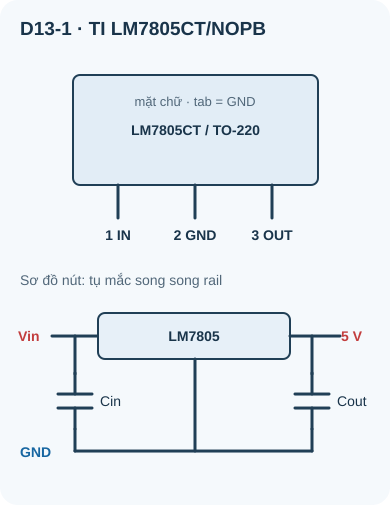
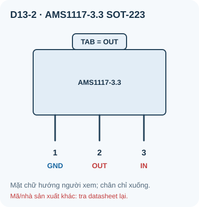

Nguồn DC & IC Ổn Áp Tuyến Tính
Từ adapter đến hai rail DC — chọn ổn áp tuyến tính theo điện áp, tải, tụ và nhiệt của đúng linh kiện.
- Hiểu tại sao cần IC ổn áp — adapter không phải nguồn DC lý tưởng
- Phân biệt ổn áp tuyến tính thường, LDO và ổn áp chuyển mạch
- Đọc và hiểu datasheet IC LM7805 và AMS1117-3.3
- Thiết kế mạch nguồn 5V và 3,3V theo datasheet
- Hiểu dropout voltage và tại sao LDO quan trọng với nguồn pin
- Tính công suất tiêu tán nhiệt của IC LDO
- Lập sơ đồ và kế hoạch đo nguồn 5 V/3,3 V; chỉ lắp khi đã chốt part/package và duyệt mạch
- So sánh hiệu suất LDO vs buck converter

Dụng cụ và linh kiện
| Tên | Thông số | SL |
|---|---|---|
| IC LM7805 | Ví dụ TI TO-220, đầu ra 5 V; dải đầu vào/dòng cho phép phụ thuộc tải và tản nhiệt theo datasheet | 1 |
| IC AMS1117-3.3 | SOT-223 hoặc TO-252, LDO 3,3V/800mA | 1 |
| Tụ điện 100µF/25V (electrolytic) | Tụ lọc đầu vào và đầu ra | 4 |
| Tụ gốm 100nF | Decoupling | 4 |
| Adapter 9V DC hoặc 12V DC | Nguồn vào — KHÔNG dùng 220V trực tiếp | 1 |
| LED + R hạn dòng | Test tải | 2 |
| Breadboard + multimeter | — | 1 bộ |
1. Tại sao adapter 5V không phải nguồn DC lý tưởng?
Adapter điện (đặc biệt loại rẻ) có thể cho ra điện áp thực tế dao động 4,5V–5,5V tùy tải, có nhiễu AC (ripple), và thay đổi theo nhiệt độ. Vi điều khiển (ESP32, STM32) nhạy cảm với ripple nguồn — có thể gây lỗi ADC, reset ngẫu nhiên, và noise trong tín hiệu analog.
IC ổn áp (voltage regulator) nhận điện áp vào thô và xuất ra điện áp chính xác, ổn định, ít ripple hơn nhiều. Đây là khối thiết kế cơ bản trong mọi thiết bị điện tử.
2. Ổn áp tuyến tính và nguồn chuyển mạch
| Đặc tính | Ổn áp tuyến tính (có nhóm LDO) | Buck Converter (chuyển mạch) |
|---|---|---|
| Nguyên lý | Tiêu tán phần thừa thành nhiệt | Chuyển đổi năng lượng qua L, C |
| Hiệu suất | Trong mô hình bỏ qua dòng tĩnh, η≈V_out/V_in (5 V từ 12 V ≈42%); thực tế thấp hơn | Phụ thuộc IC, tải, cuộn cảm, diode/MOSFET và PCB; đọc đường hiệu suất của đúng thiết kế |
| Ripple đầu ra | Phụ thuộc nhiễu nguồn, tải, tụ và dải đo; không có một mức µV chung | Phụ thuộc tần số chuyển mạch, lọc, layout và cách đo; không có một mức mV chung |
| Độ phức tạp | Ít linh kiện hơn ở ví dụ LM7805; tụ OUT không bắt buộc cho ổn định theo TI | Cần chọn L, C, diode/MOSFET, hồi tiếp và bố trí vòng dòng theo datasheet |
| Nhiệt lượng | P≈(V_in−V_out)I_out, cộng dòng tĩnh; kiểm T_j theo package/PCB | Tổn hao dẫn và chuyển mạch cũng sinh nhiệt; kiểm ở dòng và nhiệt độ thực |
| Dùng khi | Chọn khi dropout, công suất nhiệt, dòng và nhiễu đều đạt yêu cầu | Chọn khi cần giảm tổn hao hoặc tỉ lệ điện áp lớn, sau khi kiểm BOM/EMI/layout |
3. IC LM7805 — Ổn áp tuyến tính 5V, không phải LDO

Đọc mô tả D13-1
Chỉ áp dụng TI LM7805CT/NOPB gói TO-220 NDE, nhìn mặt chữ với chân chĩa xuống: trái 1 INPUT, giữa 2 GND, phải 3 OUTPUT; tab kim loại nối GND. Tụ đầu vào mắc VIN–GND và tụ đầu ra mắc 5 V–GND, không nằm nối tiếp đường nguồn. Tra lại mã và package thực tế.
| Thông số | Giá trị | Ý nghĩa |
|---|---|---|
| V_in cho line regulation | Ít nhất 7,5 V | Điều kiện TI Rev. L: T_j=25 °C, I_out≤1 A; kiểm lại theo tải/nhiệt thực |
| V_in tối đa | 35V | Không vượt quá 35V |
| Dropout voltage | 2V | V_in phải lớn hơn V_out ít nhất 2V |
| I_out tối đa | 1A (1,5A peak) | Cần tản nhiệt nếu dùng gần giới hạn |
| Độ chính xác | ±4% | V_out = 4,80V–5,20V |
3.1 Tính công suất tiêu tán nhiệt
Ví dụ: LM7805, V_in=12V, I_out=500mA
P_heat = (12–5) × 0,5 = 7 × 0,5 = 3,5W — IC sẽ rất nóng, cần tản nhiệt (heatsink)!
Ước tính nhiệt độ mối nối: T_j ≈ T_ambient + P_heat × R_θJA của cả IC và tản nhiệt đã lắp. Chỉ thay số sau khi tra datasheet và thông số tản nhiệt thực tế; không mặc định R_θJA = 5°C/W. Ở 3,5 W, phải kiểm tra nhiệt độ mối nối cho phép và dùng tản nhiệt phù hợp.
4. IC AMS1117-3.3 — LDO 3,3V cho ESP32/Arduino

Đọc mô tả D13-2
Áp dụng AMS1117-3.3 SOT-223 của Advanced Monolithic Systems, không suy rộng mọi IC chữ 1117. Nhìn mặt chữ với ba chân hướng xuống: trái 1 GND, giữa 2 OUT, phải 3 IN; tab nối OUT. IN nhận 5 V, OUT cấp 3,3 V. Bản AMS tham chiếu dùng 22 µF tantalum từ OUT về GND; kiểm tra đúng mã và package trước khi cấp nguồn.
Với AMS1117-3.3 đúng mã của Advanced Monolithic Systems, datasheet cho dropout tối đa 1,3 V ở 0,8 A. Phép cộng 3,3 + 1,3 = 4,6 V chỉ là kiểm headroom tối thiểu danh định tại chân IN; bảng điện áp đầu ra của hãng dùng Vin=4,8 V và còn có dung sai đầu ra. Vì vậy không khẳng định 4,6 V bảo đảm đúng 3,3 V trên mọi tải/nhiệt; phải thêm dự phòng sụt áp dây/USB, kiểm đúng part và đo rail tại tải dự kiến. Với LM7805 của TI, điều kiện line regulation ở tải tới 1 A dùng Vin từ 7,5 V trở lên tại 25 °C; không dùng trực tiếp từ USB 5 V. TI LM7805 Rev. L; AMS1117 datasheet do hãng lập.
5. Bài phân tích: Nguồn 5V và 3,3V
Chưa có mã và package IC, nguồn, tải và người duyệt phần cứng của người học. Các bước sau là checklist thiết kế trên giấy hoặc trong mô phỏng, không phải chỉ dẫn cấp điện. Chỉ lắp sau khi đối chiếu pinout, tụ ổn định, công suất nhiệt và giới hạn theo đúng datasheet part/package đang dùng.
Mạch 5V (LM7805): Trên schematic ví dụ, đặt nguồn 9 V vào IN, GND làm mốc và lấy 5 V ở OUT; thêm C_in giữa IN–GND và C_out giữa OUT–GND. Pin số chỉ hợp lệ sau khi chọn đúng mã/package và đối chiếu datasheet. Tính công suất nhiệt trước khi chọn tải.
Mạch 3,3V (AMS1117): Trên schematic ví dụ, rail 5 V vào IN, GND làm mốc, 3,3 V ở OUT; C_in nối IN–GND. Với AMS1117 của Advanced Monolithic Systems, xét C_out 22 µF tantalum OUT–GND theo datasheet; mã/package khác phải tra lại pin và tụ ổn định. Không đặt tụ nối tiếp rail.
So sánh tải nhẹ: Tính dòng qua LED và điện trở giả định ở từng đầu ra; trong mô phỏng, ghi điện áp không tải/có tải và đối chiếu giới hạn datasheet.
Gợn nguồn: Dự đoán ảnh hưởng của tụ và tải; chỉ khi có mạch đã được duyệt mới dùng oscilloscope với đầu dò/dây GND phù hợp để đo và ghi điều kiện đo.
Nhiệt: Tính P=(V_in−V_out)I và T_j theo điện trở nhiệt đúng package/PCB. Nếu sau này đo trên mạch đã duyệt, ngắt nguồn trước khi thay tải và không chạm IC đang hoạt động.
1: P_heat ≈ (9−5)×0,3 = 1,2 W. Với R_θJA giả định 50 °C/W và môi trường 25 °C, T_j≈25+1,2×50=85 °C. Đây là ước lượng dưới giới hạn 125 °C ở giả định đã cho; kiểm lại nhiệt độ môi trường, package/PCB và dòng thực trước khi quyết định tản nhiệt.
2: P_heat ≈ (5–3,3)×0,5 = 0,85 W. Đây là sụt áp trên IC, không phải “dropout”; dropout tối thiểu là thông số khác. SOT-223 vẫn có thể rất nóng ở 0,85 W: kiểm tra R_θJA theo diện tích đồng PCB, nhiệt độ môi trường và giới hạn T_j trước khi quyết định có cần tản nhiệt hoặc giảm tải.
3: 3,3 V/2 A = 6,6 W tải. Nếu V_in=5 V: tổn hao LDO lý tưởng hóa (5−3,3)×2=3,4 W, chưa kể dòng tĩnh; cần xét giải pháp buck có định mức, hiệu suất và tản nhiệt được kiểm ở điều kiện dùng thật, không chọn chỉ theo dòng quảng cáo.
4: TI LM7805 Rev. L nói tụ đầu ra không bắt buộc cho ổn định, nhưng có thể cải thiện đáp ứng khi tải thay đổi; hình ứng dụng gợi ý 0,1 µF gốm nếu cần. Tụ 100 µF và 100 nF có ESR/ESL và dải trở kháng khác nhau; không thể kết luận ghép chúng làm đầu ra “sạch ở mọi tần số”.